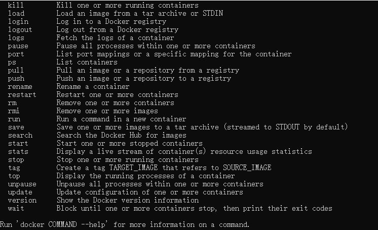
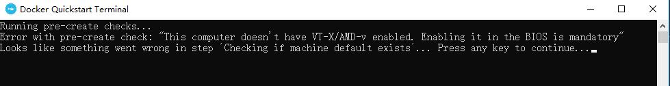
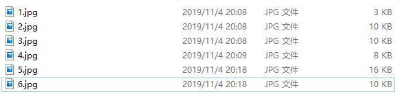
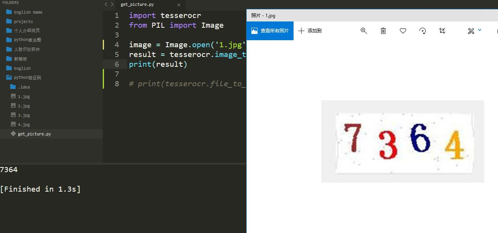
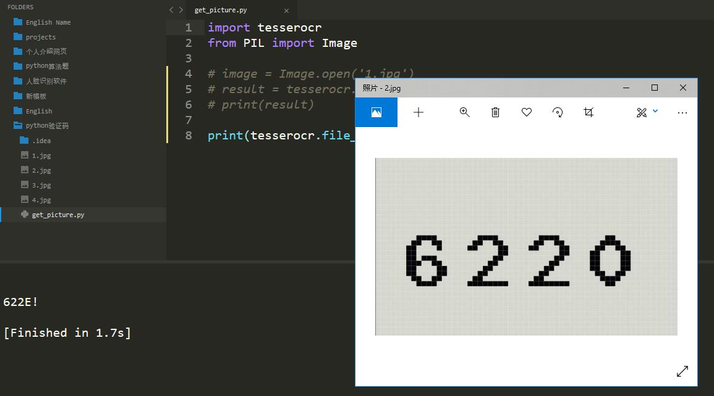
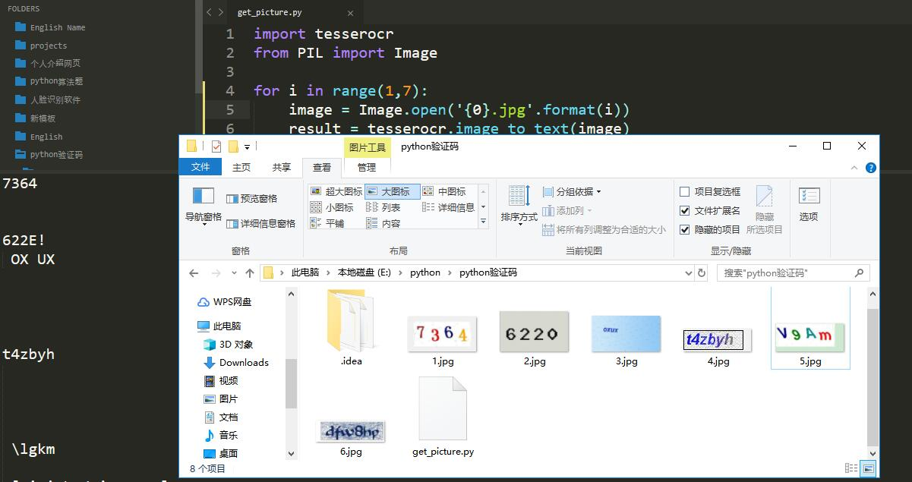

在之前的博客中，我们学习了selenium的用法，它是一个动态抓取页面的方法，但是，动态抓取页面还有其他的方法，这里介绍Splash方法，并结合具体实例进行讲解。
Splash是一个JavaScript渲染服务，说到js大家肯定会想到网页，对的，Splash是Scrapy中支持JavaScrapy渲染的工具，是一个带有HTTP API的轻量级浏览器，可以进行动态渲染页面的抓取。
Scrapy-Splash安装有两个方法，这里我们用Docker进行安装，因此首先要安装Docker(多容器技术，将应用和环境进行打包，形成一个独立的"应用"，可以让每个应用隔离，适合于大规模爬虫系统)，下载地址为：
https://docs.docker.com/docker-for-windows/install/
下载后安装，会出现 docker desktop requires Windows 10 Pro or Enterprise version 15063问题。
这个问题是windows10家庭版不支持Hyper-V，无法安装docker,需要下载docker toolbox安装。地址为：
http://mirrors.aliyun.com/docker-toolbox/windows/docker-toolbox/
也可以开启Hyper-V进行安装，这里就不具体说明了。
安装后打开cmd控制台，会有下面的结果，说明运行成功(安装的过程很麻烦，需要耐心)：

下面就是用安装Scrapy-Splash了，安装的命令为：
docker run -p 8050:8050 scrapinghub/splash 这里的话，我在环境配置上出了问题，再bios中把Intel Virtualization Technology已经设置为enable，但是再运行docker时还是出现了问题，在外部的因特尔虚拟化技术已经打开了，但是却用不了virutualBox虚拟机。这里等到之后的博客，继续为大家讲解Splash。如果大家有知道原因的话，可以和我交流。

现在，许多网站都用各种各样的措施进行反爬虫，其中一项就是用验证码。而且验证码现在已经发展得有很多种，而且交互式验证码已经越来越流行，需要鼠标操作的也越来越多，这也造成爬虫的工作越发艰难，下面就先介绍如何用python识别常见的一种图形验证码。
图形验证码是最早的验证码，很常见，一般有字母和数字组成，我们先保存网上的一些验证码图片，如下：

OCR技术：光学字符识别，是指通过扫描字符·，然后通过形状将其翻译成电子文本的过程。
tesserocr库：Python的一个OCR识别库，是对tesseract做的一层封装，因此需要先安装tesseract,然后安装tesserocr，安装过程这里就不详讲了。
import tesserocr
from PIL import Image
image = Image.open('1.jpg')
result = tesserocr.image_to_text(image)
print(result)识别前后的图片和结果如下：

还有其他方法也可以识别验证码，就是用file_to_text()方法直接将图片文件转化为字符串，我们换张图片如下：
print(tesserocr.file_to_text('2.jpg'))识别前后的图片和结果如下：

我们看到识别的结果和我们想要的有所区别，但其实是线条阻挡了，在下面的博客中会介绍如何处理。
其他的验证码识别如下：
